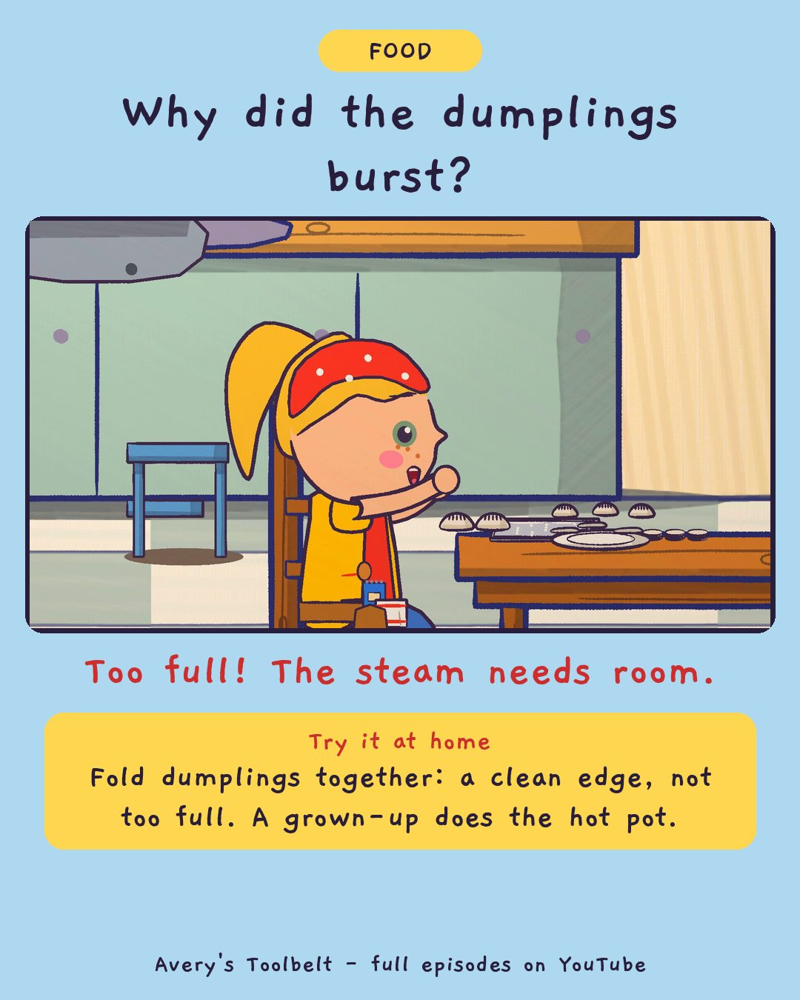

Sunday DumplingsWhy Do Dumplings Burst?
星期天的水餃

Why did the dumplings burst?
Too full! The steam needs room.
Try it at home
Fold dumplings together: a clean edge, not too full. A grown-up does the hot pot.
Free printable coloring page (PDF) Watch the full episode on YouTubeAbout this episode, for grown-ups
On Sunday, Kai's family comes over to make dumplings - trays everywhere, a bowl the size of the sink, and Kai showing Avery the fold. Avery wants to learn the right fold. But Kai's mom folds one way and his Ah-ma folds another, and both work.
Gus makes one dumpling of his own. It takes three wrappers, gets its own plate, a wall of spare wrappers around it, and a name: Roger. Then the pot: Kai's forty come out as forty. Nine of Avery's burst open in the water. Which fold was wrong?
What children find out: the water inside a dumpling turns to steam and pushes. So the edge has to be clean and a bit damp and squeezed shut - and not too full, because it needs room.
For grown-ups: an episode about asking the wrong question, and a friend who helps not with encouragement but with the truth: his own first forty were worse.